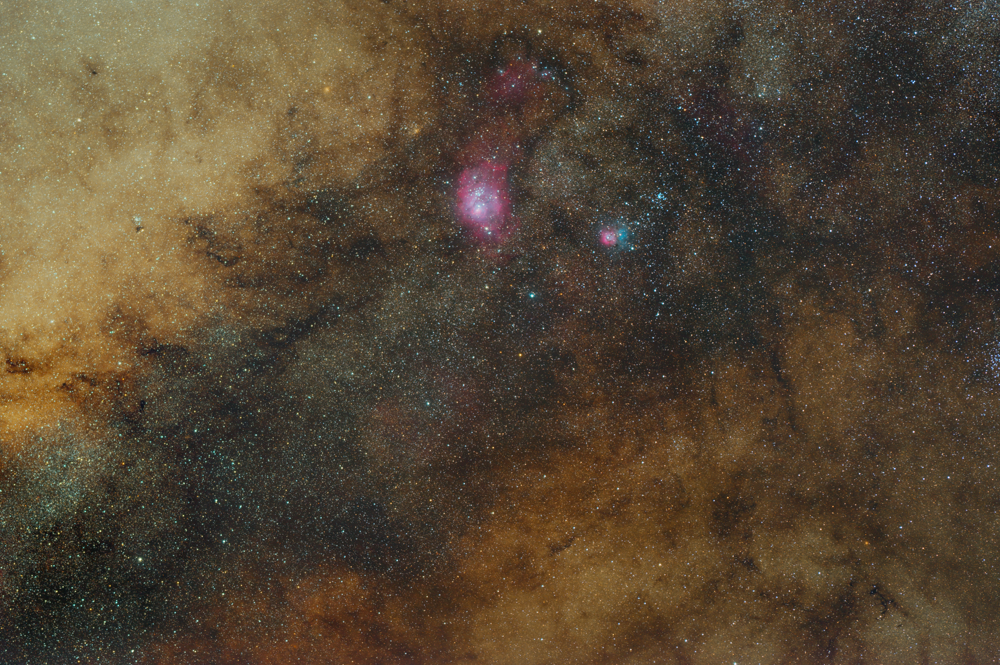

Hướng dẫn cách khử
Gradient bằng Siril.

Gradient là gì?
Trong chụp ảnh thiên văn, Gradient là hiện tượng nền trời bị lệch màu hoặc sáng tối không đều trên toàn bộ bức ảnh, thay vì là một nền tối phẳng mượt.
Đây là "kẻ thù" lớn nhất khi kéo sáng (stretch) ảnh nền sâu (DSO) hay dải Ngân Hà, khiến các chi tiết tinh vân mờ bị che khuất.
Ví dụ thực tế dễ hình dung nhất:
Hãy tưởng tượng bạn đang đứng trong một căn phòng tối và bật một chiếc đèn bàn ở góc phòng:
- Chỗ ngay sát chiếc đèn sẽ rất sáng.
- Càng đi xa chiếc đèn về phía góc đối diện, phòng sẽ tối dần đi.
- Sự chuyển tiếp từ: Rất sáng -> Sáng vừa -> Tối dần -> Tối thui một cách mượt mà đó chính là Gradient sáng.
Nếu thay bóng đèn vàng bằng bóng đèn màu đỏ, bạn sẽ thấy góc phòng có một vệt màu đỏ loang dần ra rồi mất hẳn. Đó chính là Gradient màu.

Ảnh minh họa gradient mầu (M31).
Có 2 loại gradient chính
1. Gradient trong Ảnh Thiên Văn (Astrophotography):
- Bản chất: Ánh sáng từ đèn đường, đô thị hoặc ánh Trăng chiếu vào bầu khí quyển và phản xạ lại vào ống kính.
- Biểu hiện: Nền trời bị một quầng sáng màu vàng, cam hoặc xanh lá cây tràn qua một góc (thường là phía gần chân trời).
- Cách xử lý: Dùng phép trừ (Subtraction) trong các công cụ Background Extraction (Siril, PixInsight, Graxpect) để loại bỏ.
2. Gradient do Quang học (Vignetting / Tối góc):
Bản chất: Vật kính/Lens không phân bổ ánh sáng đều, làm trung tâm ảnh sáng hơn và 4 góc bị tối đi.
Biểu hiện: Bốn góc ảnh bị đen xì hoặc dính vệt tối hình tròn.

Ảnh minh họa.
Cách xử lý: Chụp file Flat frame chuẩn để triệt tiêu, hoặc dùng phép chia (Division) nếu xử lý hậu kỳ bằng phần mềm.

Ảnh flat cho thấy ánh sáng phân bố không đều trên ảnh.
Cách xử lý Gradient bằng Siril.
Có 2 cách khử Gradient chính.
Cách 1: Xử lý Gradient cho ảnh Thiên hà (Galaxy):
Thiên hà là đối tượng tương đối dễ xử lý nền nhất, vì xung quanh thiên hà thường là khoảng không vũ trụ mang màu đen trung tính (trừ trường hợp bạn phơi sáng hàng trăm giờ để lấy bụi IFC/High-latitude Dust – lúc này sẽ áp dụng theo cách xử lý Tinh vân).
Các bước thực hiện.

Ảnh minh họa.
- Mở công cụ Background Extraction.

Vị trí của BE nằm trong Image Processing.
- Nếu ảnh tương đối sạch, bấm Generate để Siril tự động rải các điểm mẫu (Sample points).
Ảnh sau khi được rải sample tự động.
3. Kiểm tra mô hình nền (Compute Background): Bấm Compute Background để xem trước mô hình nền mà phần mềm vừa tính toán.
Nếu phát hiện những khu vực bị đen sâu hoặc bị rực sáng bất thường, bạn cần chỉnh lại điểm mẫu thủ công.

ảnh xuất hiện khu vực đen bất thường do đặt sample vào nền tinh vân.
- Click chuột trái: Thêm điểm mẫu vào những vùng nền bị sót.- Click chuột phải: Xóa bớt các điểm mẫu tự động đặt sai vị trí (đặc biệt là các điểm cắn vào đĩa thiên hà hoặc sao sáng, vì chúng sẽ làm lệch thuật toán và gây lõm nền).
Sau khi loại bỏ sample xấu.
Áp dụng (Apply): Khi nền đã phẳng đều, chọn phép trừ (Subtraction) và bấm Apply.
Cách 2: Xử lý Gradient cho ảnh Tinh vân (Nebula):
Các bước thực hiện:
1. Bật chế độ xem Histogram: Giúp hiện rõ các dải Gradient ẩn và ranh giới giữa bụi tinh vân với nền trời thật.

Ảnh tại khu vực trung tâm Milky Way.
3. Đặt các điểm mốc ban đầu ở 4 góc: Bắt đầu đặt điểm mẫu thủ công từ 4 góc ảnh – nơi thường chịu tác động của Vignetting hoặc ô nhiễm ánh sáng nhưng ít bị tinh vân che phủ.

Hãy chấm vào vị trí ít sao hoặc bụi tối (sample ko bắt buộc phải ở sát góc).
4. Rải điểm mẫu thủ công diện rộng:
Chấm từng điểm mẫu một vào những "khoảng trống" giữa các dải tinh vân (những vùng nền trời thực sự hoặc vùng bụi tối đậm).
Quy tắc sinh tử: Cực kỳ né tránh các vùng tinh vân sáng, vùng bụi phản xạ và các cụm sao đặc. Nếu đặt điểm mẫu vào đây, Siril sẽ nhầm các cấu trúc sáng này là
"nền trời" và loại bỏ chúng, khiến ảnh bị nổ đốm đen sì và mất sạch chi tiết tự nhiên.

Ưu tiêm đặt vào những khu vực bụi tối, ít sao.
5. Bấm Compute Background liên tục để kiểm tra:
Sau khi đặt thêm một vài điểm, bấm Compute Background ngay để kiểm tra mô hình nền.
Nếu thấy mô hình nền xuất hiện các "vùng lõm" dị thường, hãy dùng chuột phải xóa ngay điểm mẫu vừa đặt ở khu vực đó.

6. Hoàn tất xử lý: Khi mô hình nền mô phỏng đúng dải Gradient ô nhiễm mà không ăn vào tinh vân, chọn Subtraction và bấm Apply.